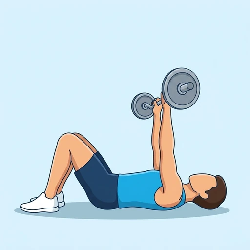
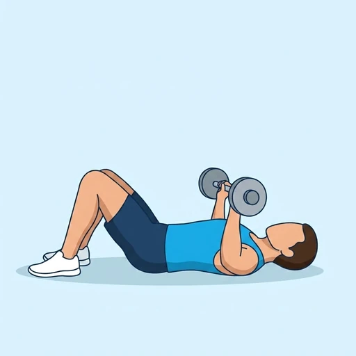
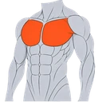
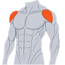
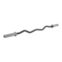

Floor EZ-Bar Press
A floor press variation using an EZ-bar for a more comfortable wrist and elbow position.
Chest · EZ Curl Bar · Intermediate


Muscles worked by the Floor EZ-Bar Press
Primary

ChestPectoralis MajorSecondary

Front DeltsAnterior DeltoidAlso called: pec, pecs, pectoralis major, pectoralis, chest muscles.
Equipment

EZ Curl BarAlso called: ez bar, ez curl bar, curl bar, w-bar, cambered bar, zig-zag bar.
How to do the Floor EZ-Bar Press
- Lie on the floor holding an EZ-bar over your chest.
- Lower the bar until your elbows touch the floor.
- Press back up to full extension.
- Repeat.
Form tips
- The EZ-bar reduces wrist strain vs. a straight bar.
- Keep your feet flat on the floor.
At a glance
| Body part | Chest |
|---|---|
| Category | Strength |
| Force type | Push |
| Mechanic | Compound |
| Difficulty | Intermediate |
| Equipment | EZ Curl Bar |
| Goals | Hypertrophy, Strength |
| Tags | Push day, Knee safe, No axial load, Lower back safe, Shoulder safe |
| MET | 6.0 (metabolic equivalent, for calorie estimates) |
| Unilateral | No |
| Bodyweight | No |
| Dataset id | floor-ez-bar-press |
Floor EZ-Bar Press in German & Spanish
| German | Boden SZ-Stangen-Press |
|---|---|
| Spanish | Press en Suelo con Barra Z |
Descriptions, instructions and tips ship in all three languages in the JSON.
Related exercises
Exercise data (JSON)
The record below is exactly what exercises.json ships for this exercise — names, descriptions, instructions and tips in English, German and Spanish.
{
"id": "floor-ez-bar-press",
"name_en": "Floor EZ-Bar Press",
"name_de": "Boden SZ-Stangen-Press",
"name_es": "Press en Suelo con Barra Z",
"description_en": "A floor press variation using an EZ-bar for a more comfortable wrist and elbow position.",
"description_de": "Eine Floor-Press-Variante mit der SZ-Stange für eine komfortablere Handgelenk- und Ellbogenposition.",
"description_es": "Una variación del press en suelo con barra Z para una posición más cómoda de muñecas y codos.",
"category": "strength",
"force_type": "push",
"mechanic": "compound",
"difficulty": "intermediate",
"equipment": "ez_bar",
"body_part": "chest",
"primary_muscles": [
"pectoralis_major"
],
"secondary_muscles": [
"anterior_deltoid",
"triceps_brachii"
],
"goals": [
"hypertrophy",
"strength"
],
"tags": [
"push_day",
"knee_safe",
"no_axial_load",
"lower_back_safe",
"shoulder_safe"
],
"variation_group": "bench-press",
"is_unilateral": false,
"is_bodyweight": false,
"instructions_en": [
"Lie on the floor holding an EZ-bar over your chest.",
"Lower the bar until your elbows touch the floor.",
"Press back up to full extension.",
"Repeat."
],
"instructions_de": [
"Lege dich auf den Boden und halte die SZ-Stange über deiner Brust.",
"Senke die Stange ab, bis deine Ellbogen den Boden berühren.",
"Drücke zurück in die volle Streckung.",
"Wiederholen."
],
"instructions_es": [
"Túmbate en el suelo sujetando una barra Z sobre el pecho.",
"Baja la barra hasta que los codos toquen el suelo.",
"Empuja de vuelta hasta la extensión completa.",
"Repite."
],
"tips_en": [
"The EZ-bar reduces wrist strain vs. a straight bar.",
"Keep your feet flat on the floor."
],
"tips_de": [
"Die SZ-Stange reduziert die Handgelenkbelastung gegenüber einer geraden Stange.",
"Halte die Füße flach auf dem Boden."
],
"tips_es": [
"La barra Z reduce la tensión en las muñecas en comparación con una barra recta.",
"Mantén los pies planos sobre el suelo."
],
"met": 6.0,
"images": {
"flat": {
"start": "images/flat/floor-ez-bar-press-start.webp",
"peak": "images/flat/floor-ez-bar-press-peak.webp"
}
}
}Fetch just this exercise
const { exercises } = await fetch(
"https://exercise-dataset.com/exercises.json"
).then(r => r.json());
const ex = exercises.find(e => e.id === "floor-ez-bar-press");Free for personal and commercial in-app use with attribution (“Exercise data by RepDB”) — see the license and ready-made attribution snippets. Redistributing the data as a dataset or API is not permitted.